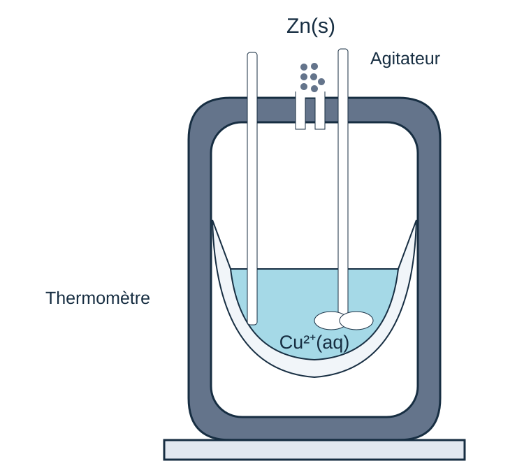

PARTIE 6 / 6
Calorimétrie
Déterminer expérimentalement une chaleur de réaction par un bilan thermique.
Définition et description du calorimètre
Calorimètre
Dispositif thermiquement isolé utilisé pour déterminer les enthalpies de réaction en solution aqueuse. Les transformations étudiées s’y déroulent à pression constante.
Le vase Dewar limite les échanges de chaleur avec l’extérieur. Un thermomètre mesure la variation de température ; un agitateur homogénéise la solution. La double paroi argentée limite les pertes par rayonnement et le vide entre les parois limite les pertes par conduction.
Cette description concerne le calorimètre à pression constante étudié ici. La bombe calorimétrique, abordée plus loin, travaille à volume constant.
Dans ce modèle, l’ensemble calorimétrique est adiabatique. Les constituants peuvent échanger de la chaleur entre eux.
Établir le bilan thermique
Tracer la frontière avant de faire le bilan
Le contenu réactionnel peut échanger de la chaleur avec le récipient, le thermomètre et les autres éléments pris en compte. L’ensemble contenu + calorimètre peut pourtant être considéré comme adiabatique vis-à-vis du milieu extérieur. Un transfert interne à cet ensemble ne traverse pas sa frontière extérieure.
Dans le schéma et le bilan progressifs, identifiez donc d’abord ce qui appartient au système, puis chaque contribution. Une réaction exothermique peut chauffer le contenu et le calorimètre sans apport thermique extérieur.
On fait le bilan de toutes les transformations physico-chimiques à l’intérieur du calorimètre. À pression constante, les chaleurs échangées sont reliées aux variations d’enthalpie.
| Contribution | Chaleur |
|---|---|
| Calorimètre | Ccalo ΔT |
| Variation de température d’un constituant | nᵢ Cp,m,i ΔT ou mᵢ cp,i ΔT |
| Changement d’état | nᵢ Δchangement d’étatH° |
| Réaction | ξ ΔrH° |
Pour chaque contribution, écrire ΔT = Tf − Tinitiale. La capacité calorifique donnée peut être molaire, massique ou celle de tout le calorimètre : ses unités indiquent comment l’utiliser.
Vérifier si toute la glace peut fondre
Considérons de l’eau et le calorimètre initialement à Tᵢ > 0 °C, puis de la glace à 0 °C. Avant de chercher une température finale positive, comparez la chaleur que l’eau et le récipient peuvent céder en refroidissant jusqu’à 0 °C à celle nécessaire pour fondre toute la glace.
Qfusion totale = nglaceΔfusH = mglaceLfus
Lfus = ΔfusH/M est la chaleur de fusion par unité de masse. Utilisez des unités cohérentes : par exemple J·g⁻¹ et g.
| Comparaison | État final |
|---|---|
| Qdisponible < Qfusion totale | Tf = 0 °C ; glace et eau coexistent. Masse fondue = Qdisponible/Lfus ; masse restante = masse initiale de glace − masse fondue. |
| Égalité | Toute la glace vient de fondre ; Tf = 0 °C. |
| Qdisponible > Qfusion totale | Toute la glace fond, puis l’eau obtenue se réchauffe : Tf > 0 °C, tant qu’aucun autre changement d’état n’intervient. |
Dans ce dernier cas, pour le mélange eau/glace :
+ mglaceLfus + mglaceceau(Tf − 0) = 0
Si la glace part sous 0 °C, ajoutez d’abord son chauffage jusqu’à 0 °C au bilan. Il ne faut jamais calculer une fusion totale puis accepter une température finale négative : cela signale que l’hypothèse de fusion totale ne convient pas.
Déterminer la capacité du calorimètre
Deux méthodes sont possibles : dissoudre un sel dont l’enthalpie de dissolution est connue, ou mélanger de l’eau froide et de l’eau chaude.
Pour le mélange, le calorimètre et l’eau froide partent de T₁ ; l’eau chaude part de T₂ :
Construire le bilan d’un mélange d’eaux
construisez le bilan, étape par étape, pour comprendre le rôle de chaque contribution.
Un calorimètre contient m₁ = 250 g d’eau à T₁ = 18 °C. On ajoute m₂ = 250 g d’eau à T₂ = 40 °C. La température finale est Tf = 28,22 °C.
Déterminer la capacité calorifique du calorimètre. Donnée : ceau = 4,18 J·g⁻¹·K⁻¹.
Données : références et précisions (eau)
Déterminer une chaleur de réaction
Une fois la capacité du calorimètre connue, on écrit le bilan en ajoutant la contribution de la réaction à celles des variations de température et des éventuels changements d’état.
Dans l’exercice Zn/Cu²⁺, on calcule les trois contributions thermiques indiquées dans le bilan, puis on détermine la variation d’enthalpie libérée par la réaction.

Une fois Qréaction obtenu, ΔrH ≈ Qréaction/ξ. Pour des solutions, les quantités initiales se calculent avec n = cV ; les coefficients de la réaction permettent de trouver le réactif limitant. Chaque solution et le calorimètre gardent leur propre température initiale dans les termes de chauffage.
Pour une dissolution d’une quantité n de substance, ΔdissolH ≈ Qdissolution/n. Si le contenu refroidit, sa contribution de chauffage est négative : la dissolution reçoit une chaleur positive dans ce bilan adiabatique.
Construire un bilan avec une réaction
construisez le bilan, étape par étape, pour comprendre le rôle de chaque contribution.
Dans un calorimètre de capacité calorifique 160 J·K⁻¹, on introduit 150 mL de solution de sulfate de cuivre(II) à 18 °C, puis 3 g de zinc à 20 °C. La température finale est 28 °C.
Calculer la variation d’enthalpie associée à la réaction : Zn(s) + Cu²⁺(aq) → Zn²⁺(aq) + Cu(s).
Données : ceau = 4,18 J·g⁻¹·K⁻¹ ; cZn = 0,380 J·g⁻¹·K⁻¹. Pour le calcul, on assimile les 150 mL de solution à 150 g d’eau.
Données : références et précisions (eau) · références et précisions (zinc)
Chaleur mesurée à volume constant
| Montage | Grandeur imposée | Relation pour le système fermé |
|---|---|---|
| Calorimètre à pression imposée | Pression extérieure constante | Qp = ΔH, avec travail de pression seul et équilibre mécanique initial et final |
| Bombe calorimétrique rigide | Volume constant | QV = ΔU en l’absence d’autre travail |
La température peut varier dans les deux montages. Pression constante et volume constant ne signifient pas température constante. Dans une bombe, l’énergie d’allumage et les autres apports éventuels doivent être pris en compte ou corrigés.
Dans une bombe calorimétrique, le récipient de réaction est rigide : V est constant et le travail de pression est nul. En ne considérant que ce travail, le premier principe donne :
ΔrU ≈ QV, réaction/ξ
Une énergie « libérée » ou « dégagée » par la réaction est négative du point de vue du système réactionnel. À volume constant, la chaleur mesurée donne ΔU et non directement ΔH.
Passer de la mesure à ΔrH°
Une bombe calorimétrique mesure une chaleur à volume constant : on en déduit d’abord l’énergie interne de réaction. Pour obtenir l’enthalpie de réaction, on utilise la relation suivante :
Cette expression suppose des gaz parfaits et une contribution pV des phases condensées négligeable. Δνg est la somme des coefficients des produits gazeux moins celle des réactifs gazeux, pour la même équation équilibrée. Les deux grandeurs sont prises à la même température T, en kelvins, et dans des unités cohérentes avec R.
Avec R = 8,314 J·mol⁻¹·K⁻¹, le terme ΔνgRT est en J·mol⁻¹. Convertissez-le en kJ·mol⁻¹ si nécessaire. Le caractère standard concerne les états des constituants ; il ne découle pas du seul fait de travailler à volume constant.
Données : références et précisions (constantes)
Thermochimie · Lénaïc Lartigue · Calorimétrie · CC BY-NC-ND 4.0
6 questions de compréhension
Ces questions reprennent les définitions et les relations. Vous pouvez recommencer.
Exercices
Après le QCM, construisez votre raisonnement sur votre brouillon, puis saisissez les résultats demandés. Les étapes du calcul figurent dans la correction détaillée, consultable après une tentative.
Vos réponses sont conservées dans ce navigateur. Ce suivi est un repère de travail, pas une note.
EXERCICE 1
Déterminer la capacité du calorimètre
Un calorimètre contient m₁ = 250 g d’eau à T₁ = 18 °C. On ajoute m₂ = 250 g d’eau à T₂ = 40 °C. La température finale est Tf = 28,22 °C.
Déterminer la capacité calorifique du calorimètre. Donnée : ceau = 4,18 J·g⁻¹·K⁻¹.
Données : références et précisions (eau)
Indice 1
L’eau 1 et le récipient se réchauffent, l’eau 2 se refroidit.
Indice 2
Isolez Ccal = −[m₁c(Tf−T₁) + m₂c(Tf−T₂)]/(Tf−T₁).
Correction détaillée
1. Système et bilan. On considère l’ensemble calorimètre + deux eaux, adiabatique à pression constante. La somme des contributions est nulle : Ccal(Tf−T₁) + m₁c(Tf−T₁) + m₂c(Tf−T₂) = 0.
2. Échanges. L’eau froide reçoit Q₁ = 250 × 4,18 × (28,22−18) = 10 679,9 J. L’eau chaude cède Q₂ = 250 × 4,18 × (28,22−40) = −12 310,1 J.
3. Inconnue. Le calorimètre reçoit −(Q₁+Q₂) = 1 630,2 J. Ainsi Ccal = 1 630,2/(28,22−18) = 159,51 J·K⁻¹. La capacité est positive ; le calorimètre s’est réchauffé.
EXERCICE 2
Réaction entre Zn et Cu²⁺
Dans un calorimètre de capacité calorifique 160 J·K⁻¹, on introduit 150 mL de solution de sulfate de cuivre(II) à 18 °C, puis 3 g de zinc à 20 °C. La température finale est 28 °C.
Calculer la variation d’enthalpie associée à la réaction : Zn(s) + Cu²⁺(aq) → Zn²⁺(aq) + Cu(s).
Données : ceau = 4,18 J·g⁻¹·K⁻¹ ; cZn = 0,380 J·g⁻¹·K⁻¹. Pour le calcul, on assimile les 150 mL de solution à 150 g d’eau.
Données : références et précisions (eau) · références et précisions (zinc)
Indice 1
Calculez chaque contribution thermique avec sa température initiale.
Indice 2
La somme de la contribution de réaction et des trois contributions de chauffage est nulle.
Correction détaillée
1. Construire le bilan. L’ensemble calorimètre + contenu est adiabatique et à pression constante. Dans le chemin de calcul, on chauffe les réactifs jusqu’à 28 °C, puis on considère la réaction à cette température : ΔHréaction + Qcal + Qsolution + QZn = 0.
2. Calculer les contributions de chauffage. Qcal = 160 × (28−18) = 1 600 J ; Qsolution = 150 × 4,18 × (28−18) = 6 270 J ; QZn = 3 × 0,380 × (28−20) = 9,12 J. Le zinc part bien de 20 °C et non de 18 °C. Chaque contribution est positive.
3. Isoler la chaleur de réaction. ΔHréaction = −(1 600 + 6 270 + 9,12) = −7 879,12 J = −7,87912 kJ, soit environ −7,9 kJ. La réaction est exothermique. Il s’agit de l’enthalpie pour la quantité qui réagit, et non d’une valeur molaire.
EXERCICE 3
Toute la glace fond-elle ?
Dans un calorimètre adiabatique, l’eau et le récipient peuvent céder 1 000 J en refroidissant jusqu’à 0 °C. La glace est initialement à 0 °C ; la faire fondre entièrement demanderait 2 000 J. On utilise Lfus = 334 J·g⁻¹.
Données : références et précisions (eau)
Déterminez la température finale et la masse de glace fondue.
Indice 1
La chaleur disponible ne suffit pas à fondre toute la glace.
Correction détaillée
1. Comparer les énergies. Les 1 000 J disponibles sont inférieurs aux 2 000 J nécessaires pour fondre toute la glace : la fusion est partielle.
2. Température finale. Il reste de la glace en équilibre avec l’eau liquide : dans ce modèle, Tf = 0 °C.
3. Masse fondue. Q = mfondue Lfus, donc mfondue = Q/Lfus = 1 000/334 = 2,994 g, soit environ 2,99 g. L’énergie disponible est utilisée pour la fusion, sans chauffage au-delà de 0 °C.
Discussion · Calorimétrie
Posez votre question et décrivez le raisonnement qui vous pose problème. Les échanges sont publics.
Vous pouvez aussi poser vos questions par mail ou pendant une séance à distance.